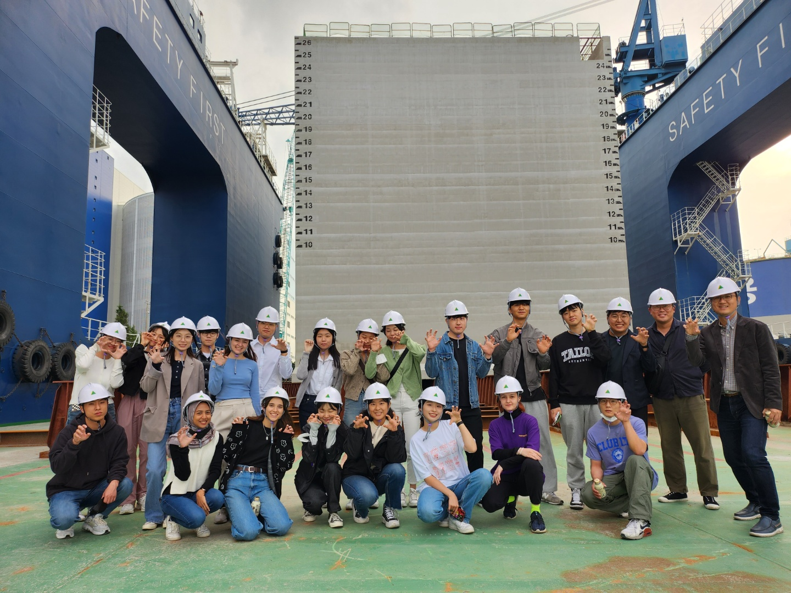
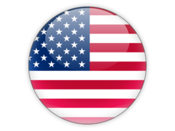
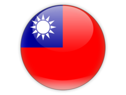
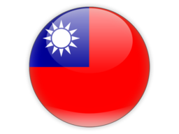

Welcome to Coastal Hydrodynamics Lab. at KU
Better Understanding of Coastal Hydrodynamics: Towards Safer and Sustainable Coasts
Research Interests
Our research interests are basically towards a better understanding of coastal hydrodynamic processes which tend to be highly complex and turbulence-dominant due to a variety of physical factors, for example, irregular geometry, wave breaking, pycnocline, thermocline, flow-structure interactions and natural extreme events in the nearshore area. Therefore, our works easily expand into coastal hazards and environmental impacts associated with coastal hydrodynamics. While the most of our works were done by numerical modelling, some of our researches also cover laboratory experiments and field observations to excel work performances. Engineering-focus projects such as measures for coastal erosions\storm surges\flooding\oil-spills are of particular interests since they require practical insights that Dr. Son had obtained through industrial experiences prior to joining Korea University. Find out more....
해안유체역학 연구실에서는 해안에서 나타나는 복잡한 흐름기인 현상들에 대해 유체역학적 관점을 토대로 발생 및 변화과정을 이해하고 그러한 현상들이 환경에 미치는 영향을 연구한다. 최근 지구온난화와 해안지역의 인위적 개발에 따라 해안환경 역시 지속적으로 변화하고 있으며, 이와 맞물려 연안침식, 지진/폭풍해일에 의한 범람, 오염물질 유출 및 확산, 이안류 등 다양한 해안수리학적 현상들도 그 특성을 달리하며 발생하고 있다. 따라서 해안유체역학연구실에서는 이론적 해석, 수치모델링 및 수리실험기법을 통해 해역에서 파랑 및 조류 등에 의해 발생하는 다양한 수리현상의 발생기작을 환경의 지속변화에 초점을 맞추어 규명하고, 이를 바탕으로 해안현안들에 대한 효율적 대처방안을 연구한다. 이를 통해 해안환경의 보전과 재해경감 및 예방을 위한 해법을 강구하고, 방파제 등 구조물 설계의 기준을 제시할 수 있으며, 궁극적으로 해안의 지속가능한 안전환경 구축에 도움을 줄 것으로 기대한다.
Research Keywords: Coastal Hydrodynamics, Sediment Transport, Numerical Modelling(CFD), Tsunamis/Storm Surges, Turbulent Mixing in the Nearshore, Oil Spill Modelling
Announcements
New Ph.D/MS students! Coastal Hydrodynamics Lab. is seeking a new, motivated MS/Ph.D student who will work on research topics as nearshore hydrodynamics, coastal processes, coastal hazards(storm surges/tsunamis) and sediment transport. Please contact Dr.Son at sson(at)korea(dot)ac(dot)kr if you are interested.
Invited virtual lecture at Universitas Hasanuddin On October 17, 2024, Prof. Son delivered a virtual guest lecture hosted by the Department of Geophysics at the Faculty of Mathematics and Natural Sciences, Universitas Hasanuddin, Indonesia. His lecture, titled "Shallow Flow Modelling Based on Perturbation Theory: Past, Present, and Future," provided deep insights into the evolving field of fluid dynamics and oceanography.
2024 Summer Reserch Trip to Jungseon We departed to Jungseon province for a two-day summer research trip. Especially, Prof. Na from the Kumho Institute of Technology, a former CHL post-doc, joined our trip with his undergraduate interns. This trip offered a perfect blend of field experiences and relaxation, creating an enriching and enjoyable atmosphere. A delightful BBQ, sharing laughter and stories late into the night added another chapter of our joyful memories.
CHL Participates in ICCE 2024 in Rome, Italy The CHL team, including Prof. Son, Junsu, and Jihyun, attended the ICCE 2024 conference held in Rome, Italy. Each of us delivered engaging talks on the topic of coastal disasters, sharing insights and discussing innovative approaches with the global research community. Beyond the academic exchange, we were captivated by the timeless charm and romantic beauty of Rome, making this conference experience truly unforgettable.

Prof. Son visited UTM in Malaysia Prof. Son and other three Korean experts in climate change and hydraulic engineering visited Universiti Teknologi Malaysia(UTM) for attending International Symposium on Hydro-Climate , co-organized by BK21 FOUR of Korea University and Centre for River and Coastal Engineering in UTM. We presented their research, sharing the latest developments in climate and hydraulic engineering and exchanging professional knowledge. Prof. Sangyoung Son delivered a presentation titled “Unveiling the Role of Cyclone Movement in Storm Surge Dynamics”, which focused on storm surges. He shared expertise on the development of integrated flood models related to climate change, addressing one of the significant challenges in construction.
CHL attended AGU Fall Meeting 2023 at San Francisco, US CHL members (Dr. Hwang, Junsu and Sehyuk) attended AGU Fall Meeting 2023 held at San Francisco, US. Sehyuk, a master student gave a talk on his topic of storm surge modelling and Sooncheol and Junsu presented their works in the poster session. They've really enjoyed memorable time in San Francisco Bay area.

2023 Summer retreat to Jungseon/Samcheok CHL headed for Samcheok and Jungseon province to have a 2-day summer break. Our itinerary included exploring the Tsunami Prevention Safety Tower and the beach area in Samcheok. This allowed us to immerse ourselves in both field experiences and relaxation. As the day turned to night, we found comfort in a cozy cabin where we enjoyed a delightful BBQ evening. This excursion provided yet another unforgettable memory, filled with joyful moments and a lot of fun!

2023 Winter retreat to Naerincheon CHL had a retreat to Naerincheon, the upper reaches of the Han River during 2023 winter break. Along the way, we stopped at several dams to take in the scenery. During the retreat, lab members participated in a variety of activities, including seminars, hiking along the Birch Forest, relaxing in the Naerincheon trail, and enjoying a barbecue at night. We had a great time, and it was the perfect way to recharge before the upcoming spring semester.
CHL attended ICCE 2022 at Sydney CHL members (Prof. Son, Sooncheol, Xiaojuan and Asrini) attended 37th International Conference on Coastal Engineering (ICCE) 2022 held at Sydney, Austraila. Soonchel and Xiaojuan gave a talk on their research output and Asrini presented her research in the poster session. We've mingled with other renowned experts over the interesting topics, and enjoyed the beauty of waterfront area at Sydney.

Congrats Dr. Hwang! The first Ph.D alumnus of CHL. Soonchel has successfully defended his dissertation entitled "Immersive and Interactive Multi-physics Modeling of Coastal Hazards" on 30. Nov. 2022. His research highly focused on the emerging technology in the wave modelling. Congrats Dr. Hwang for your success in Ph.D journey and wish the best for your future career as a professional.

2022 Field trip to Incheon New Port Construction! As a part of UG class outreach (ACEE348 Coastal Diaster Modelling), UG students and CHL members have visited the construction site of Incheon New Port. The project is 4-year long work aiming at the seawall construction composed of cassion-type seawall. It was not only a great opportunity to feel directly the giant cassion and its manufacturing process, but also a sort of refreshment. 
KU Hydro-Engineering Catalogue available ! KU Hydro-Engineering Catalogue is now available for downloading. It is offered in Korean as of now, and English version will be provided soon. The catalogue contains all the informations on KU Hydro-Engineering such as what we are doing, how you can earn the degree, who have been a member and etc. We hope that this information help you get familiar with us. Click the thumbnail below to download it!

Special Issue on "Advances in Nearshore Hydrodynamics Research"
Journal of Marine Science and Engineering [IF 2.033] had published a Special Issue focusing on Advances in Nearshore Hydrodynamics Research. This issue was first proposed and handled by Dr. Son and totally 5 papers were published successfully.
2019 International Workshop on Advanced Technology in Coastal Engineering We had successfully hold "International Workshop on Advanced Technology in Coastal Engineering" on Oct. 11, 2019 at Korea University. Prof. Patrick Lynett( Univ. of Southern California), Dr. Marcel van Gent(
 Deltares), Prof. Tso-Ren Wu( National Central University),
Prof. Sungwon Shin(
Deltares), Prof. Tso-Ren Wu( National Central University),
Prof. Sungwon Shin( Hanyang Univ.) and Dr. Byoungjoon Na( Korea Univ.) gave talks on interesting front-line topics such as tsunami hazards, climate change adaptions, non-Newtonian flow modelling, wave breaking in the workshop.
Thanks all the participants!
Hanyang Univ.) and Dr. Byoungjoon Na( Korea Univ.) gave talks on interesting front-line topics such as tsunami hazards, climate change adaptions, non-Newtonian flow modelling, wave breaking in the workshop.
Thanks all the participants!

Teaching Schedule (Past and Current)
2021S : ACEE 228 – Fluid Mechanics and Lab., ACE 635 – Computational Hydraulics
17F : ACE 832 – Tidal and Coastline Hydraulics
16S, 18S : ACE 635 – Computational Hydraulics
17S, 19F : ACE 564 – Hydrodynamics
15F, 16F, 17F, 18F, 19F, 20F : ACEE 338 – Coastal and Harbor Engineering
16S, 17S, 18S, 20S : ACEE 228 – Fluid Mechanics and Lab.
15F, 16F, 17F, 18F, 19F, 20F : EGRN 151 – Computer Language and Lab.
19S : on leave